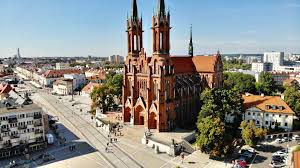
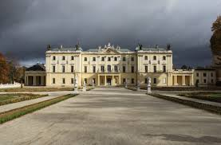
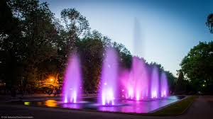

Podlaskie
Najważniejsze miasta
Białystok
Białystok – miasto na prawach powiatu w północno-wschodniej Polsce, położone na Nizinie Północnopodlaskiej, nad rzeką Białą. Jest stolicą województwa podlaskiego i siedzibą władz ziemskiego powiatu białostockiego. Pałac Branickich
Barokowa rezydencja zwana „Wersalem Północy”, otoczona przepięknymi ogrodami. Dziś mieści się tu Uniwersytet Medyczny, ale część pałacu i ogrody są dostępne dla zwiedzających.
Muzeum Pamięci Sybiru
Nowoczesne muzeum dokumentujące losy Polaków zesłanych na Syberię. Ekspozycja łączy autentyczne relacje, multimedialne prezentacje i poruszające eksponaty historyczne.Park Planty i Fontanna Multimedialna
Zielone serce miasta, idealne na spacer i odpoczynek. W letnie wieczory odbywają się tu efektowne pokazy świetlno-muzyczne.